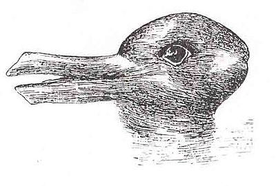

A paradigm shift is a fundamental change in the basic concepts and experimental practices of a scientific discipline. It is a concept in the philosophy of science that was introduced and brought into the common lexicon by the American physicist and philosopher Thomas Kuhn.
Kuhn used the duck-rabbit optical illusion, made famous by Wittgenstein, to demonstrate the way in which a paradigm shift could cause one to see the same information in an entirely different way.
Wait, Who's Wittgenstein?